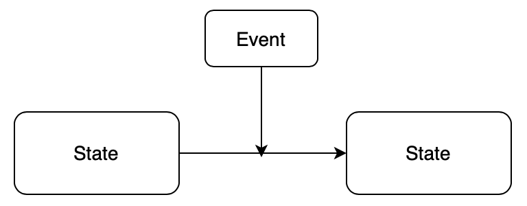
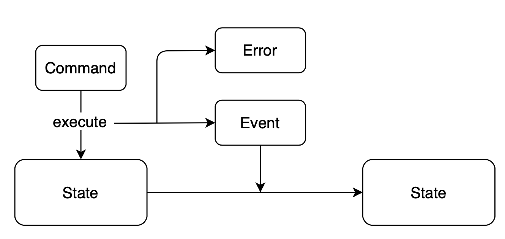

쿠키런 킹덤 서버 아키텍처 2
이번 포스트에서 다룰 내용은 CRUD와 Event Sourcing이다. 이 주제는 데이터를 다루는 방법에 대한 이야기다.
가장 간단한 예로 은행 계좌를 관리하는 어플리케이션을 생각해보자. 은행 계좌는 잔액를 관리해야하며 계좌 간의 송금 기능을 구현해야 한다. 이를 CRUD와 Event Sourcing으로 각각 구현해보자.
CRUD
CRUD는 Create, Read, Update and Delete의 약어로 데이터를 생성하고 읽고 수정하고 삭제하는 기능을 말한다. F#으로 CRUD를 나타내보면 다음과 같은 코드로 나타낼 수 있을 것이다.
// 1. Create let mutable account = BankAccount(500) // 2. Read printfn "Balance: %d USD" account.Balance // 3. Update account.Deposit(100) account.SendTo(otherAccount, 200) // 4. Delete account.Destroy()
CRUD는 어플리케이션의 구조가 가장 직관적이라는 장점이 있다. 실제 세계에서 은행 계좌를 개설하고, 입출금하고 송금하고, 계좌를 폐쇄하는 것처럼 프로그램을 작성할 때도 그대로 기능을 구현하면 되기 때문에 이해하기가 쉽다.
하지만 분산 환경, 동시성 컴퓨팅 환경에서는 이야기가 많이 달라질 수 있다. 한번에 하나의 연산만이 일어나는 것이 보장되는 환경에서는 CRUD 어플리케이션은 가장 단순하고 직관적이며 성능도 매우 뛰어나다.
하지만 한번에 다수의 연산이 동시에 일어나는 분산, 동시성 환경에서는 데이터를 읽는 도중에 데이터가 수정 또는 삭제되거나 아직 생성되지 않은 데이터를 읽거나 수정하거나 삭제하는 등 문제가 매우 복잡해진다. 그래서 Mutex, Semaphor와 같은 Locking Mechanism이 도입을 하게 되는데 이러한 매커니즘은 dead lock, live lock 등의 문제를 발생시키거나 시스템이 커짐에 따라 scalable하지 않다는 문제가 있다.
Event Sourcing
Event Sourcing은 CRUD와 다른 방식으로 데이터를 다룬다. CRUD 이외에 데이터를 다루는 방법이 있다는 것부터 생소한 개념이다. CRUD의 직관적인 모델과는 다른 면이 있다.

Figure 1: "eventsourcingtransition.png"
Event Sourcing에는 상태(state)와 이벤트(event)라는 개념이 있다. 상태는 이벤트를 만나 새로운 상태로 변화(transition)한다.
type Account = Account of int
type Event =
| Deposited of int
| Withdrawn of int
let initAccount = Account 0
let transition state event =
match state, event with
| Account balance, Deposited n -> Account (balance + n)
| Account balance, Withdrawn n -> Account (balance - n)
let replayFrom event state =
events
|> List.fold transition state
let replay events = replayFrom initAccount
Event Sourcing의 핵심은 여기서 상태를 저장하는 것이 아니라 이벤트를 저장하는 것이다. 그리고 현재 상태를 알기 위해서는 미리 설정된 최초의 상태를 저장된 모든 이벤트들을 이용해서 현재 상태까지 변화시킨다. (이를 replay라고 한다) 하지만 모든 read 요청에 replay를 하려면 성능상의 문제가 있기 때문에 실제 운영 상황에서는 최근 state을 저장하는 snapshot을 구현한다.
그런데 이벤트는 항상 valid해야 한다. 잔고가 100 USD인데 120USD가 출금되는 이벤트는 발생하면 안된다는 뜻이다. 여기서 Command라는 개념이 나온다.

Command는 현재 상태를 변화시키기 위한 명령이다. 현재 상태에서 해당 command를 실행할 수 있으면 event를 반환하고 그렇지 않다면 error를 반환한다. 그래서 보통 event는 command에 ‘의해’ 발생된 것이기 때문에 event는 과거분사 형태로 이름짓고 command는 명령형 형태로 이름을 짓는다.
type Command =
| Deposit of int
| Withdraw of int
let deposit amount state =
match state with
| Account balance -> Account (balance + amount) |> Ok
let withdraw amount state =
match state with
| Account balance ->
if balance < amount then "Not enough balance to withdraw" |> Error
else Account (balance - amount) |> Ok
let execute command state =
match command with
| Deposit amount -> deposit amount state
| Withdraw amount -> withdraw amount state
Why Event Sourcing?
CRUD와 같은 기능을 구현하기 위해서 동원되는 개념만 해도 event sourcing이 복잡한 기술이라는 것을 알 수 있다. 복잡한 만큼 강력하지만 그만큼 신경쓰고 관리해야하는 부분도 많은만큼 개발팀에 많은 부담을 주기 마련이다. 그럼에도 event sourcing을 선택하는 이유는 뭘까?
첫번째, Domain Driven Modeling이 매우 용이하다. 위에 코드에서 보았듯이 사용자의 use case가 곧 command가 된다. 그리고 거기서 발생하는 event들을 정의함으로써 도메인 지식을 코드에 그대로 기술할 수 있다. 따라서 도메인 지식 탐색에 매우 도움이 되며 소프트웨어와 운영 상황의 불일치를 해소할 수 있다. (CRUD를 이용하면 데이터베이스 자체가 어플리케이션이 되어버리는 일이 매우 빈번하다.)
두번째, Concurrency 환경에서의 강력함. 아마도 쿠키런 개발팀이 Event Sourcing을 선택한 이유가 아닐까 싶다. Event sourcing은 태생적으로 동시성 환경에서 매우 강력하다. 지금까지 살펴봤으니 알겠지만 event sourcing에는 데이터를 생성하고 읽는 작업밖에 없다. 데이터가 수정되거나 삭제되는 일이 없다. 따라서 CRUD에서 언급한 각종 문제가 발생하지 않는다.
또한 event sourcing은 actor model과 상당히 잘 어울리는 장점이 있다. Actor는 message queue인 mailbox를 통해 command를 순차적으로 받을 수 있다. 따라서 event도 순차적으로 발생하며 actor의 state가 한번에 한번씩 transition된다. State 관리에 복잡한 매커니즘을 도입할 필요가 없어지는 것이다. 실제로 이러한 장점 때문에 Akka에서는 event sourcing을 통해 actor의 state를 관리하는 방법을 제공한다.
But still…
하지만 Event Sourcing이 복잡한 기술인 것은 틀림없다. 직관적인 모델이 아니라 이해하는 데 많은 노력이 필요하고, 운영 상에 어려움도 많아진다.
쿠키런 킹덤 개발팀도 언급했듯이 DB에서 데이터를 직접 수정할 수 없기 때문에 상태 관리를 위해서는 다른 툴을 개발하거나, 게임 서버를 통해 이벤트를 발생시켜야하기 때문에 불편함이 있다고 한다. 달리는 자동차의 바퀴를 갈아끼는 게 더 어려워진 것 같다. 웁스.